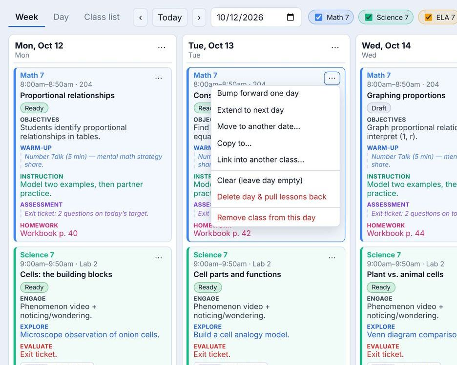

Schedules that bend
Snow day? Bump everything forward in one click.
Lessons are kept in order for each class, so when a day is lost — a snow day, an assembly, a fire drill that ate your period — every later lesson slides to the next class meeting on its own. Extend a lesson that needs another day, move it, copy it to another class, or pull everything back.
- Weekly, A/B week and rotating “Day 1, Day 2…” schedules
- Half days, planning days and assemblies with their own bell times
- Drag a lesson to a new day, or onto another class to copy it
- Add an extra class or drop one from a single day
- Reuse this year’s classes and lessons next year
